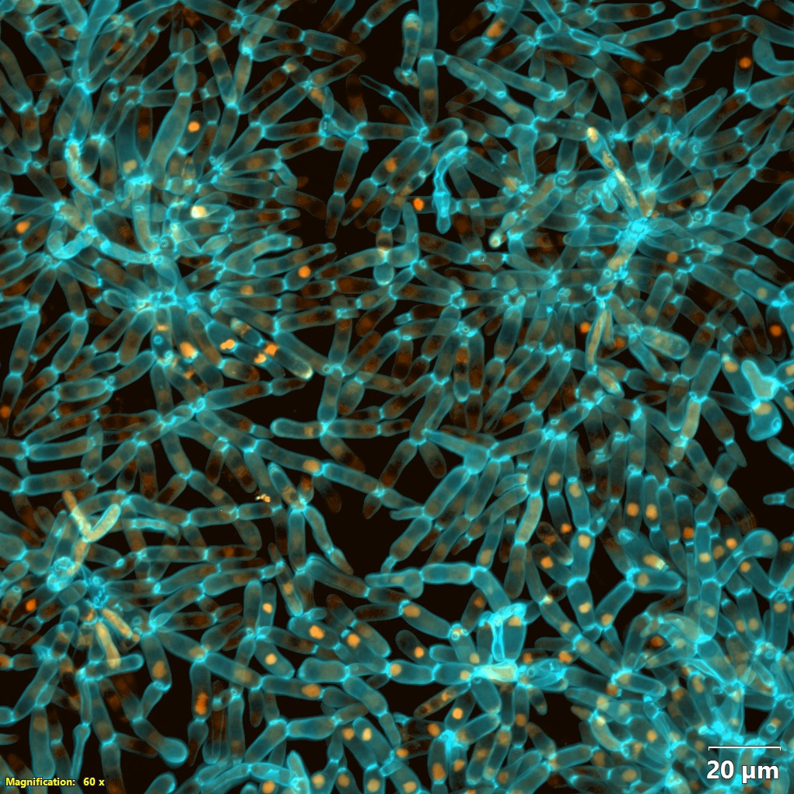

Open Science / Strains
Strains
We are developing a model system that we hope will be used by diverse researchers around the world. Strains from the frozen archive are shared on request, with no authorship requirement. We ask that requests not overlap with work ongoing in our lab or that of a collaborator, and that you agree to the short terms on the form. Fill in one form and tell us what you are trying to find out.
- Populations
- 15
- Frozen samples
- 3,000+
- Freeze interval
- 25 days
- Storage
- -80 °C
Requesting strains
How a request works
The form tells us exactly which samples to pull from the freezer. Shipping is at the requester’s cost; the form asks for a FedEx account number.
What the form collects
- Recipient information, for shipping and documentation.
- The strains you want: population, timepoint and treatment.
- A short research plan, so we can send the protocols that go with those strains.
- Shipping preference: overnight on dry ice, or agar stabs.
Naming what you want
Populations run PA1–5 (anaerobic), PM1–5 (mixotrophic) and PO1–5 (obligately aerobic); timepoints are written as in the papers (how to read a strain name). If you know the phenotype you want but not the timepoint, say so on the form and we will work it out.
Strains are typically shipped within two weeks of approval.
Download the request form (.docx)
Where to send it
Send the completed form to Dung T. Lac, dlac3@gatech.edu. For help choosing populations or timepoints, see Who to write to.
The frozen archive
Any sample can be thawed and revived. How the archive is built and used is described under The frozen fossil record.
